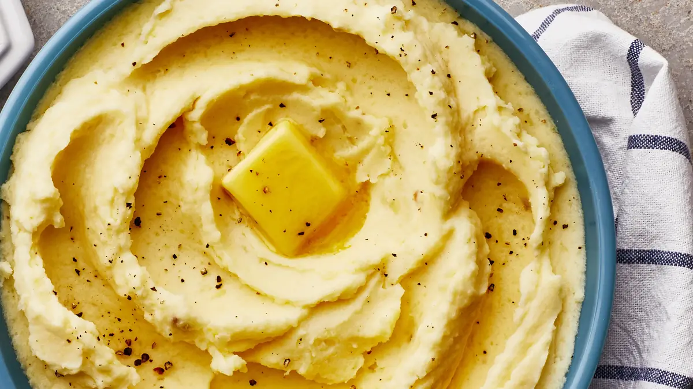

Parmesan Mashed Potatoes
- Serves4 to 6
- Ingredients6
- Steps2

Ingredients
- 4 medium russet potatoes
- Kosher salt
- 1/2 cup heavy cream
- 4 tablespoons (1/2 stick) unsalted butter
- Freshly ground black pepper
- Grated Parmesan cheese, for serving
Directions
- Peel the potatoes, cut them into 1-inch pieces, and place in a large pot. Add enough cold water to cover the potatoes by at least 2 inches. Generously season the water with salt and bring to a boil. Cook until the potatoes are tender all the way through, 15 to 20 minutes. Drain in a colander. Push the potatoes through a ricer into a large bowl. (Alternatively, in a large bowl, mash the potatoes with a potato masher or fork.)
- In a small saucepan, warm the cream and butter over medium heat until the butter has melted completely. Pour the cream-butter mixture, a few tablespoons at a time, into the bowl with the potatoes and stir to incorporate. When the mashed potatoes are your desired consistency, season with salt and pepper. (You may not need to add all the cream-butter mixture.) Sprinkle cheese over the mashed potatoes and serve!
Recipe credit: the MasterChef Junior Cookbook by Christina Tosi (p. 156)